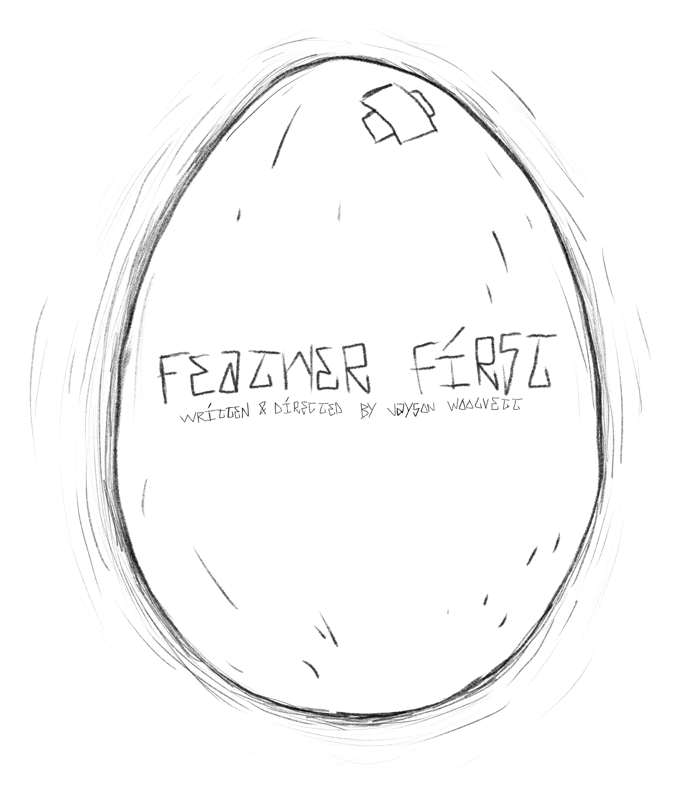
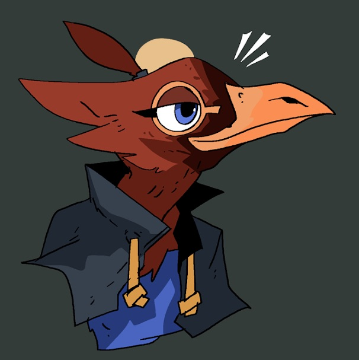
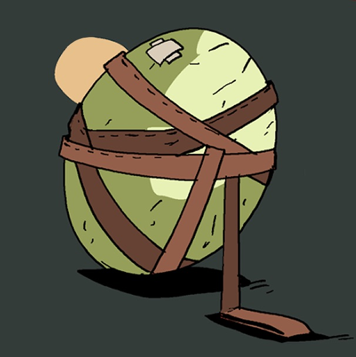
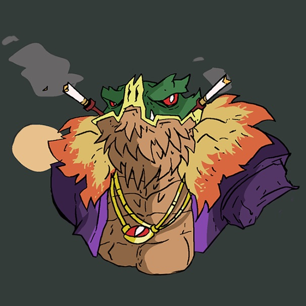
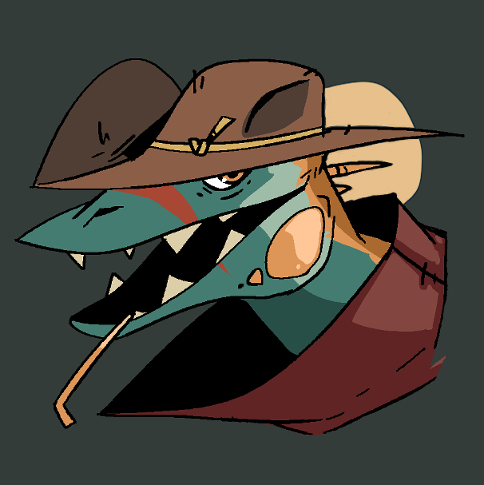
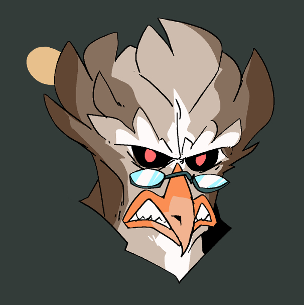
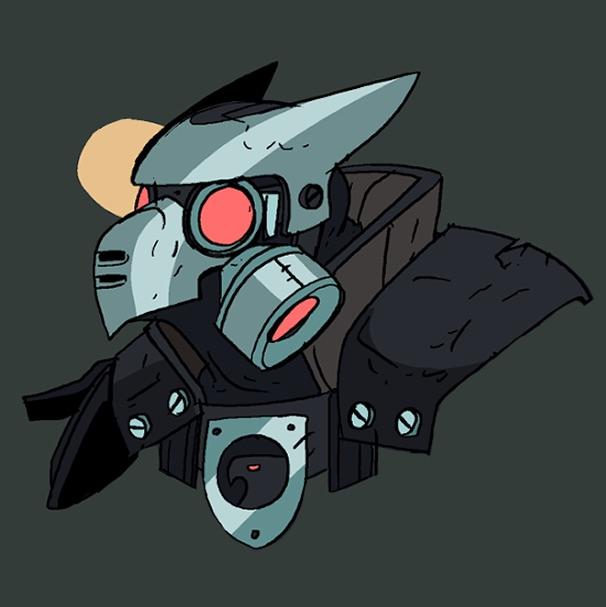
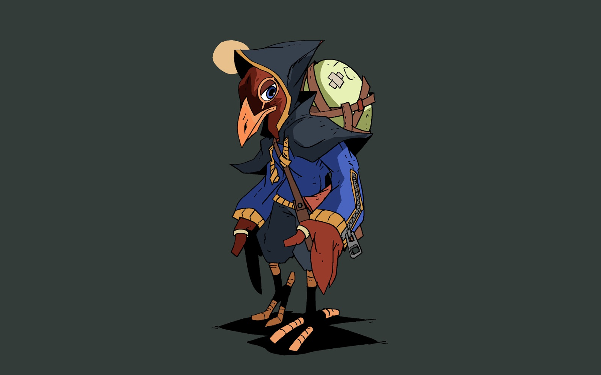
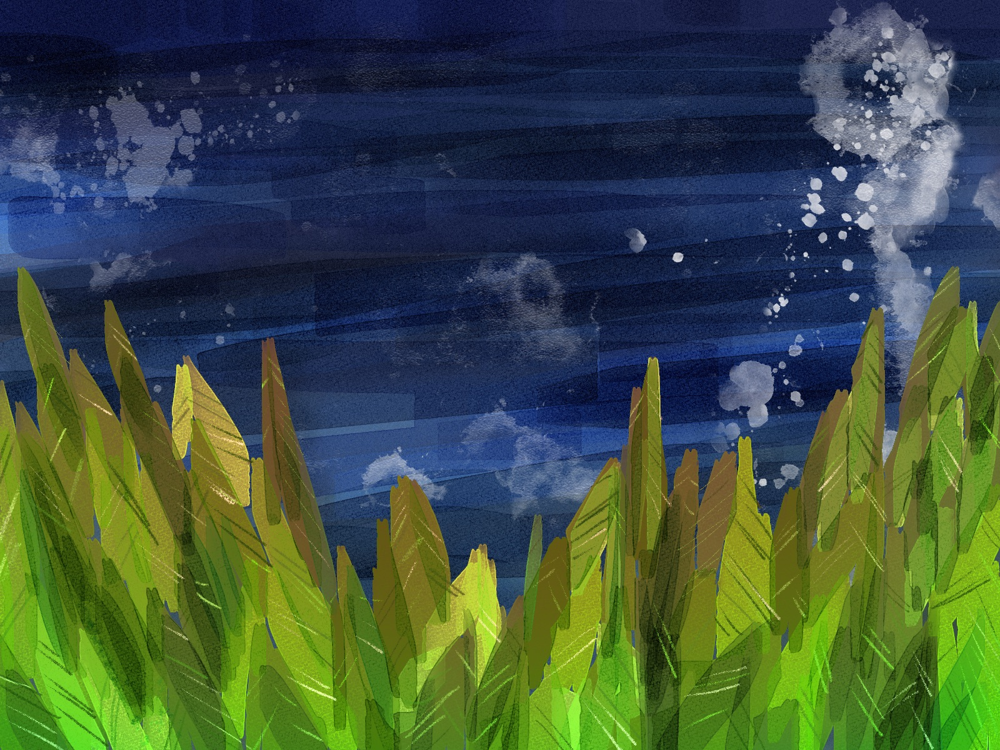

Feather First10 chapter x 11 minute mini-series, sci-fi action
In a world where birds rule over lizards through draconian law and population control, a rebellion bird finds a lizard egg and has to protect it to help set them free.
Credits:
Writer, Director, Producer: jayson woolvett
Character Design: Jesse Turner

McBird is an orphan. Having lost her father in a brutal assassination during the Bird Uprising, she grew to loathe the lizards and blamed them for it. Living in the Underworld gave her a better view at the life that the Lizards live, having outgrown her anger, protecting the egg has given her a renewed purpose in life. Disillusioned by the Rebellion after discovering that The Don would hold the Egg as a trophy for his collection instead of a beacon of hope. It wasn't her choice to be the egg's caregiver, but it's her choice to protect it from anyone with maligned motivations towards it.

The Egg is an object so rare, most of the residents of Pacific City wouldn't even know what it is if they saw it. After the Bird Uprising, the Birds systemically sterilized the lizards and the only ones who lay them are choosen from birth by the government, and they're never laid naturally, only ever inside of secret lab's scattered around Pacific City. When McBird comes into possession of the egg, she becomes public enemy #1.

The Don is the flamboyant lizard owner of the Lucky Scales Casino at the centre of the Underworld. How do you control a man rich beyond his wildest dreams in the slums? Well, for the Don, it's his giant fish that swims all alone in its giant tank. Looking to free his people, he formed a rebellion group in the underworld to push tension and weaken the local government. A white wine connessuer, and never seen without his trademark two cigarettes, The Don is prepared to do whatever it takes to win.

Little is known of The Thief, what we do know for sure is that hes a lizard, he knows the sewer system as if he come from it (and perhaps he does), is aligned with no one, can easily forge trust with anyone but fails to maintain them. A scorpion by nature, you wouldn't want to be trapped in his stinger.

The EBSP Leader is defined by his ruthless adherance to the heirarchal structure that the birds have established for themselves. With little desire to be the face of the Birds, happily content to enforce the draconian laws he helped write in the shadows. It was his idea to give the lizards the opportunity to be apart of the EBSP because of their bruting size, it was also his idea that to join them they would have to cut off their tails. A man of few words but with eyes that tell a thousand lashes.

The EBSP is the police force that maintains order within Pacific City. Birds are the only ones permitted to ascend to the higher ranks, but Lizards can get out of the slums by joining their ranks at a cost that ostracizes them from their own. They are entitled to do whatever they please, within reason, even if the reason is jaywalking.

Chapter 1; The Egg...
Inside of a secret laboratory near Forestview Train Station, scientists are running experiments on lizards and a freshly laid egg. A small crew of rebels break into the lab and lay waste to everyone inside, freeing the egg from captivity. While flying away from the lab, the bird carrying the egg gets shot out of the sky by a sharpshooter inside of a helicopter, falling into the woods below. McBird, who was waiting for the train home, investigates the forest and makes a discovery that changes her life forever...
Working Animatic - Note: Untimed
Read the script sample
Inside of a secret laboratory near Forestview Train Station, scientists are running experiments on lizards and a freshly laid egg. A small crew of rebels break into the lab and lay waste to everyone inside, freeing the egg from captivity. While flying away from the lab, the bird carrying the egg gets shot out of the sky by a sharpshooter inside of a helicopter, falling into the woods below. McBird, who was waiting for the train home, investigates the forest and makes a discovery that changes her life forever...
Working Animatic - Note: Untimed
Read the script sample
Chapter 4; The Stadium...
After escaping from the Lizard Don's office in the top floor of Lucky Scales Casino, McBird weaves thru the busy streets on gameday to lose the thugs who are close on her tail. Finding temporary refuge inside of a bar, she has to plot her next move before the Don's goons close in on her...
Read the script sample
After escaping from the Lizard Don's office in the top floor of Lucky Scales Casino, McBird weaves thru the busy streets on gameday to lose the thugs who are close on her tail. Finding temporary refuge inside of a bar, she has to plot her next move before the Don's goons close in on her...
Read the script sample
Chapter 8; The Lizard Island...
It's not a party without the Don. After racing away thru the favela and onto the last boat to Lizard Island, the aging Lizard King shares with McBird how she is the final beacon of light for his peoples on the mainland. Meanwhile, The Don and his Rebels are gearing up to take over the city, and the EBSP are preparing for war...
Read the script sample
It's not a party without the Don. After racing away thru the favela and onto the last boat to Lizard Island, the aging Lizard King shares with McBird how she is the final beacon of light for his peoples on the mainland. Meanwhile, The Don and his Rebels are gearing up to take over the city, and the EBSP are preparing for war...
Read the script sample
